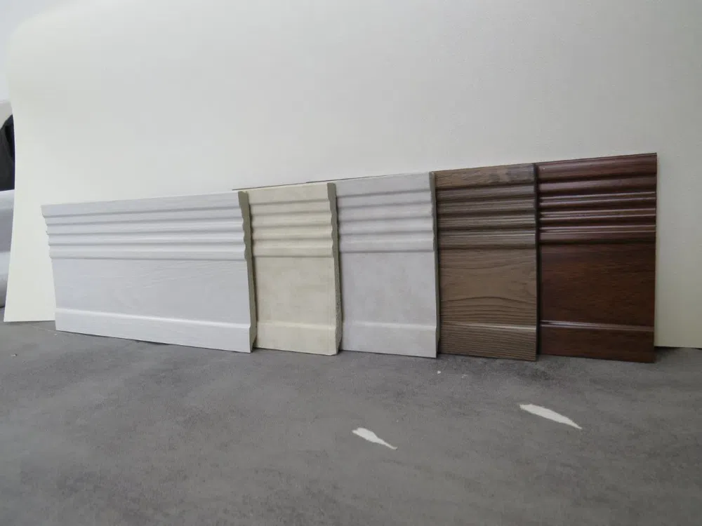
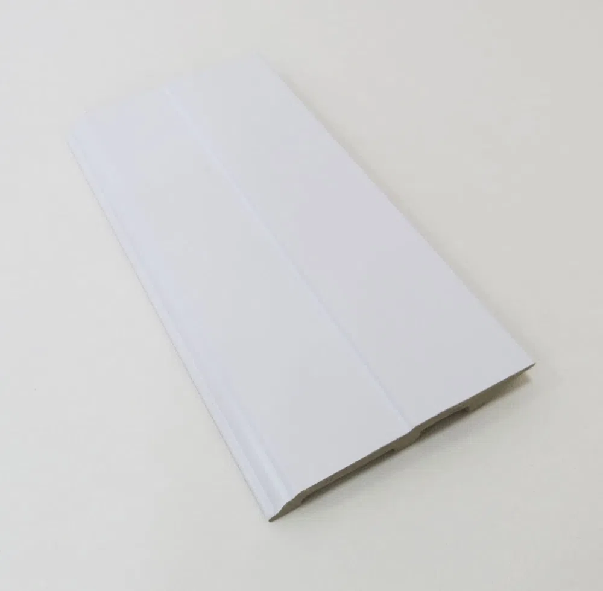

آقای پارکتاستودیو معماری شاهرخ خانلی
همه محصولاتقرنیز
برای مشاهده مدلها و رنگبندی، نوع قرنیز موردنظر را انتخاب کنید.

PVC BASEBOARDقرنیز PVC۴ مجموعه · ۵۲ تصویرمشاهده مدلها ←
WOOD BASEBOARDقرنیز چوبیآماده دریافت تصاویرورود به بخش ←